MODEL ARCHITECTURE · TRAINING SYSTEMS · AGENTIC INTELLIGENCE
Kimi K2：万亿参数，如何训练成能执行任务的 Agent
Kimi K2: Open Agentic Intelligence · Kimi Team / Moonshot AI。本文面向已经了解 Transformer、MoE 与自回归推理的读者，目标是重建 K2 的优化器、张量与路由、数据生产、RL 和系统切换链路，并判断实验支持了哪些结论。
主源为 2507.20534v2.pdf，32 页；arXiv 首次提交 2025-07-28，v2 更新 2026-02-03。它是一份技术报告，未核验到会议接收信息。研读与扩展资料核验截止 2026-10-29。论文报告的评测主要反映 2025 年发布时的模型与基线。
本页按论文 §1–6 与附录 A–G 的顺序讲解，保留 13 张原图、6 张完整原表、1 个算法、11 组展示公式（其中附录编号公式 6 个）。图内坐标、图例与模块标签保留，图注在图外。标注“原论文”的数字来自作者；“外部来源”来自相关论文或官方代码；“本文推导／解读”是独立分析。这里没有进行万亿模型训练或 GPU 性能复现。
Overview · 一句话、一段话与五个关键点
一句话： K2 把 Muon 的 token 效率、只纠正失控 attention heads 的 QKClip、超稀疏 MoE、合成工具轨迹和可验证／自评 RL 接成了一个可扩展的 Agent 训练系统。
一段话： 模型共有约 1.04T 参数，每 token 激活约 32.6B，使用 MLA 和 384 选 8 的专家路由。难点不是单独提出更大的网络，而是同时解决万亿规模优化稳定性、有限优质数据的重复利用、陌生工具的多步交互，以及训练引擎和推理引擎使用不同分片时的频繁权重切换。论文的最好证据是稳定训练轨迹、若干受控小模型实验及发布时的完整评测；系统参数、生产数据、训练预算和部分评估脚手架公开不足，因而结果不等于端到端可复现。
- 稳定性： Muon 更新后再缩放 Q/K 的特定分量，避免直接修改本步 forward/backward；MLA 的共享 rotary key 保持不动。
- 容量： 60 个 MoE 层各有 384 个 routed experts，激活 8 个，另有 1 个 shared expert；容量增大主要进入驻留权重，而不是同比增加单 token 专家 FLOPs。
- 数据： 预训练重写提升重复曝光的有效性，SFT 用模拟环境与真实代码沙箱生产并过滤多轮工具轨迹。
- 反馈： 数学、代码、指令与 faithfulness 提供可验信号；主观任务由 rubric critic 排序，critic 又从可验任务持续校准。
- 系统： H800 上 PP16 × EP16、重算／激活压缩／CPU offload，以及 checkpoint engine 分块广播，都是模型选择的一部分。
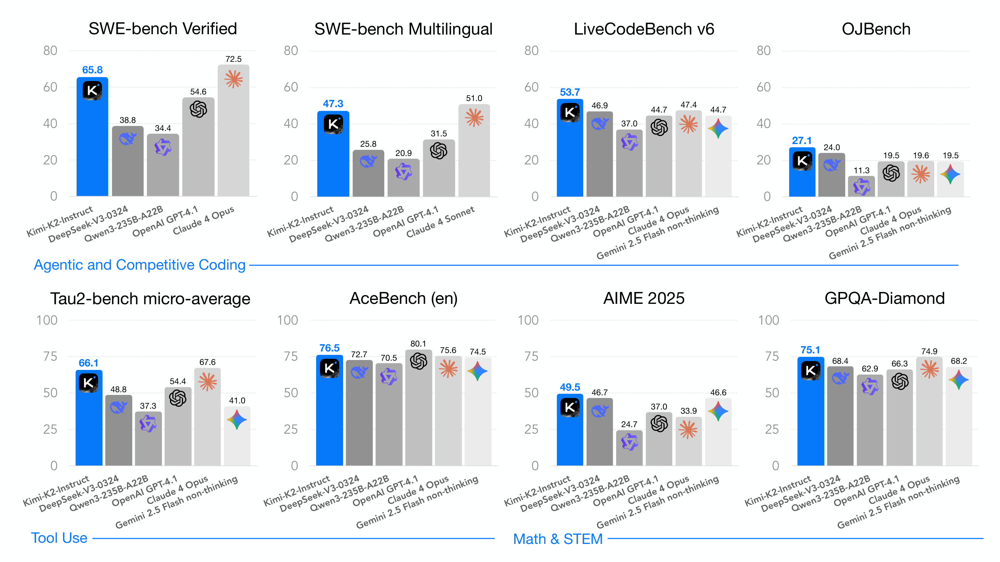
Source: Kimi K2 v2 · Original Figure 1 · author vector PDF rendered without outer caption. Click / Enter to zoom. Vector PDF
Figure 1 怎么读： 横向比较各任务的柱高，先确认同一小图的评估条件，再看 K2 与基线差距。它是摘要式证据，不能把不同 benchmark 的百分比分数相加，也不能据此计算统一能力提升。需要完整读 Table 3 的弱项、星号、脚手架与输出预算。
1 · Introduction：优化的是“有用工作”，不只是下一 token
论文把 Agent 能力定义在与环境反复交互的过程中：理解任务、选工具、读反馈、调整行动、完成目标。已有 LLM 可以回答问题或生成一次函数调用，但长链路上，格式错误、状态理解错误、环境反馈失真和多步推理偏差会累积。扩充参数并不能自动补齐这些环节。
作者的核心观察分两层。预训练侧，Muon 在先前 Moonlight 实验中表现出更高 token 效率，但规模放大后 QK logits 容易爆炸；数据侧，优质文本供应有限，原样重复的边际收益下降。后训练侧，真实工具环境难以大规模搭建，只有可验证任务又覆盖不了写作、偏好和开放问答。
因此，K2 的贡献是联合方案：MuonClip 稳定优化，重写与稀疏 scaling 增强有效学习信号，工具模拟提供覆盖，真实执行提供可信反馈，统一 RL 和切换系统把它们组织起来。本文解读： 这是完整技术栈的技术报告，不是有单一严格因果证明的算法论文。阅读时应逐层问：这个环节有什么受控证据，其成本转移到了哪里？
2 · Pre-training：稳定性、数据效用与架构共同决定规模
2.1 · MuonClip：用 forward 的信号，限制 post-update 权重
Muon 对二维矩阵的动量更新进行近似正交化，使不同方向的更新更加均衡。K2 继承 Moonlight 的 weight decay 与 RMS matching，并加入 QKClip。先把论文的 MHA 简化记号读清楚，再映射到 MLA。
Original LaTeX
\mathbf{Q}^{h} = \mathbf X \mathbf W_q^{h}, \quad
\mathbf K^{h} = \mathbf X \mathbf W_k^{h}, \quad
\mathbf V^{h} = \mathbf X \mathbf W_v^{h}.Scroll horizontally for the full formula.
令单个序列的层输入 ， 为 hidden size， 为 token 数；，。输出分别为 、。矩阵乘法把 token 表征投影到特定头；这里尚未描述 K2 实际使用的低秩／RoPE 分解。
Original LaTeX
\mathbf O^{h} = \operatorname{softmax}\left( \frac{1}{\sqrt{d}} \mathbf Q^{h} \mathbf K^{h\top} \right) \mathbf V^{h}.Scroll horizontally for the full formula.
的形状为 ，softmax 沿 key 方向归一化，再对 V 加权得到 。论文为简洁省略了 causal mask；实际统计不能让被 mask 的无效位置改变 head 最大有效 logit。缩放 抑制随维度增加的方差，但无法阻止训练中投影权重不断增长。
Original LaTeX
S_{\max}^{h} = \frac{1}{\sqrt{d}} \max_{\mathbf X \in B} \max_{i,j} \mathbf Q_i^{h} \mathbf K_j^{h\top}Scroll horizontally for the full formula.
是当前 batch 的样本集合， 是 query/key token 索引， 是每层每头一个标量。它在本步 forward 中得到，不是梯度范数，也不是 softmax 概率。若 sequence／data 分片跨设备，应明确各 rank 如何做 max reduction；只看本地子块可能漏掉真正的最大值。论文未公开这部分生产实现细节。
Original LaTeX
\mathbf W_q^{h} \gets \gamma^{\alpha} \mathbf W_q^{h} \qquad
\mathbf W_k^{h} \gets \gamma^{1-\alpha} \mathbf W_k^{h}Scroll horizontally for the full formula.
全头版本令 ，，通常 。固定输入和被缩放的权重下，Q/K 内积整体乘 ，所以双方各缩 即可。不过，若只有一头异常，全头缩放会干扰其他头；K2 改为每头 ，仅超过 时触发。
MLA 为什么不能机械照搬： 每头的 content query 与 content key 各缩 ；每头 rotary query 缩 ；跨头共享的 rotary key 不缩。两个得分分量便同时乘相同因子：
Scroll horizontally for the full formula.
这是本文对固定输入、固定分量的代数推导。实际时间顺序是：旧权重 forward 得到 → backward → Muon 更新 → QKClip 缩放新权重。新权重的当前样本 logits 不必仍等于旧 logits，未来输入也会变化，所以不能将其写成“对未来任何输入严格保证 logits ≤100”。论文的直接证据是受监控训练中失控得到抑制。
Original Algorithm 1 · MuonClip Optimizer
for each training step t:
// 1. Muon optimizer step
for each weight W ∈ R^(n × m):
M_t = μ M_(t−1) + G_t
O_t = Newton–Schulz(M_t) · sqrt(max(n,m)) · 0.2
W_t = W_(t−1) − η (O_t + λ W_(t−1))
// 2. QK-Clip
for each head h in every attention layer:
obtain S_max^h already computed during forward
if S_max^h > τ:
γ = τ / S_max^h
W_qc^h ← W_qc^h · sqrt(γ)
W_kc^h ← W_kc^h · sqrt(γ)
W_qr^h ← W_qr^h · γOriginal operation order and three MLA scales retained. M₀=0; G is gradient; μ momentum; η learning rate; λ weight decay. Original TeX with comments
算法的三个量各有作用： 累积梯度方向；Newton–Schulz 近似矩阵正交化，乘 匹配更新 RMS；学习率 与 weight decay 控制参数步长和衰减。矩形矩阵的目标是非零奇异值方向的均衡，有限迭代并不意味着精确所有奇异值都等于 1。报告没有给出 NS 迭代数、momentum 或每类非二维参数的完整处理表，不能把其他 Muon 实现的默认值冒充 K2 配置。
算子与内存代价： head max 可在 attention kernel 中附带统计并归约，避免额外物化 logits；生产实现是否这样融合没有公开。后续缩放是选定 Q/K 矩阵切片的读改写，不能改错共享 key 或 V。NS 还涉及矩阵乘法与优化器状态，token 效率更好不自动等于每 step 墙钟时间更短。公平比较需要同时报 loss、tokens、训练 FLOPs 与秒数。
QKClip：哪些分量需要一起缩放？
调节观测 logit 与阈值。toy 得分由 content 占 75%、rotary 占 25% 构成；展示固定输入缩放，不模拟优化器后的新输入。
γ 在超阈值时为 τ/S。共享 kR 与 value 不动。实际算法在 Muon 更新后执行，旧 forward max 只是控制信号。
交互使用同一 toy 输入，展示 content／rotary 内积如何被共同缩放。选择“错误地只缩 rotary query”可看到 content 项仍失控；它不是完整训练模拟，也不预测下步最大 logit。
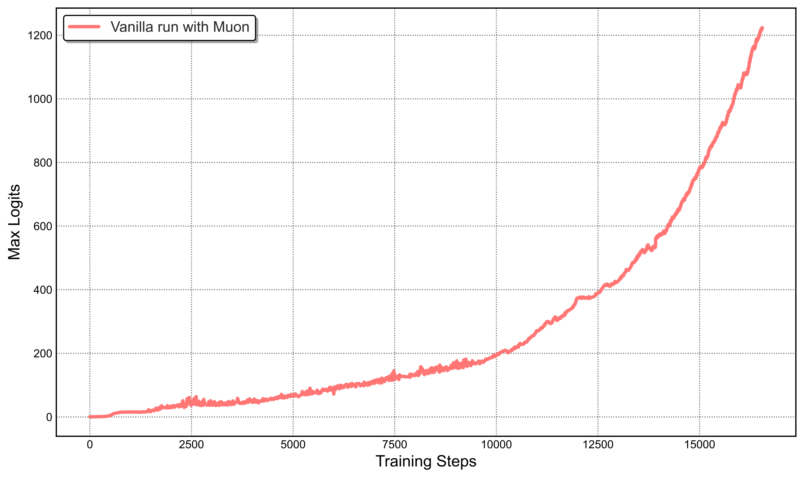
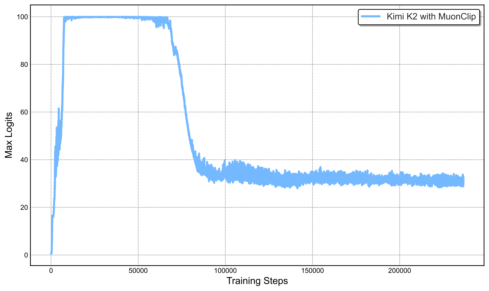
Source: Kimi K2 v2 · Original Figure 2 · author vector PDF rendered without outer caption. Click / Enter to zoom. Vector PDF
Figure 2 深读： 左图是 9B 激活／53B 总参数的中规模 vanilla Muon，最大 logits 很快超过 1000；右图是 K2 配 MuonClip，阈值 100，前期触顶，约 30% 训练进程后降入稳定区间。两侧模型尺度与训练配置不同，因此不能将曲线差距当作同规模 randomized ablation。它分别展示风险存在与 K2 训练中控制有效。
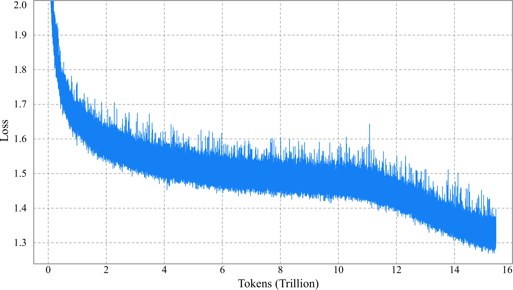
Source: Kimi K2 v2 · Original Figure 3 · author vector PDF rendered without outer caption. Click / Enter to zoom. Vector PDF
Figure 3 深读： 横轴 tokens、纵轴每 step loss。原图注明未平滑、未子采样，且为清晰起见略去训练最开始部分。曲线没有可见 spike，是生产运行稳定性的强观察；它不能证明没有发生任何内部重试，也不能取代无 clip 的万亿规模对照。小规模“是否损害质量”实验在附录 D。
2.2 · Data Rephrasing：同一事实，换一种有效曝光
知识数据的难题是重复学习：一次曝光不一定吸收充分，原样重复十遍又容易让模型记住措辞而不是迁移知识。K2 采用风格／视角多样 prompt，长文按 chunk 自回归重写，再做 fidelity 检查；数学文档改写为 learning notes，并将优质非英语数学材料翻成英语。
Swipe / scroll horizontally to compare all models.
| # Rephrasings | # Epochs | SimpleQA Accuracy |
|---|---|---|
| 0 (raw wiki-text) | 10 | 23.76 |
| 1 | 10 | 27.39 |
| 10 | 1 | 28.94 |
三组使用早期 K2 checkpoint，在 SimpleQA 测知识吸收：原 wiki-text 重复 10 epochs 为 23.76；重写一次再 10 epochs 为 27.39；10 个重写版本各单遍为 28.94。相对原始重复，分别提高 3.63pp、5.18pp；第三组相对提升 。相对第二组则提高 1.55pp，约 5.66%。pp 是百分点，不是百分比。
比较支持“多样表述比相同文本重复更有效”，但未给每种版本的精确 token 量、教师生成 FLOPs、长度分布或 fidelity 错误率。生产中每个 corpus 最多重写两次，与 toy 实验的十次重写不同。把教师生成成本排除在训练 token 之外，会让“token 效率”的经济含义变窄；不能称为零成本增加十倍知识。
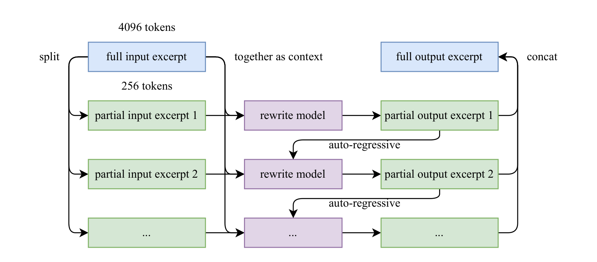
Source: Kimi K2 v2 · Original Figure 4 · author vector PDF rendered without outer caption. Click / Enter to zoom. Vector PDF
Figure 4 怎么读： 左侧全输入约 4096 tokens，分成约 256-token chunks；每步生成看到完整原文和先前输出，再写下一块；最后拼接。这里保留全局上下文是为了跨段一致性，previous outputs 约束后续衔接。代价是教师 prompt 重复、前面错误可能沿生成链传播，以及 fidelity 检查自身的误判。需要核对人名、数字、公式、因果和否定词，而不能只看 semantic similarity。
四类预训练域是 Web、Code、Math、Knowledge，共报告 15.5T 高质量 tokens，许多处理继承 K1.5。报告没有公开足以重建的每域比例、完整去重规则、许可证清单与数据混合 schedule，因而“高质量”是作者的数据构建结论，不能由本页重新独立验证。
2.3 · Architecture：容量留给专家，长上下文算力留给 Agent
Swipe / scroll horizontally to compare all models.
| DeepSeek-V3 | Kimi K2 | Δ | |
|---|---|---|---|
| #Layers | 61 | 61 | = |
| Total Parameters | 671B | 1.04T | ↑ 54% |
| Activated Parameters | 37B | 32.6B | ↓ 13% |
| Experts (total) | 256 | 384 | ↑ 50% |
| Experts Active per Token | 8 | 8 | = |
| Shared Experts | 1 | 1 | = |
| Attention Heads | 128 | 64 | ↓ 50% |
| Number of Dense Layers | 3 | 1 | ↓ 67% |
| Expert Grouping | Yes | No | - |
相对 DeepSeek-V3，K2 维持 61 层，把 routed experts 从 256 增为 384、仍选 8，共享专家 1；attention heads 从 128 降为 64，dense 层从 3 降为 1，取消专家分组。总参数约 1.04T，激活 32.6B。原表箭头写总参数 +54%、激活 −13%；按显示数字计算约 +54.99%、−11.89%，存在近似／舍入口径差异，本表保留原值。
稀疏度定义： ，是 routed experts 的总数与激活数之比，不是总参数除激活参数。shared expert、attention、embedding 都影响后者。
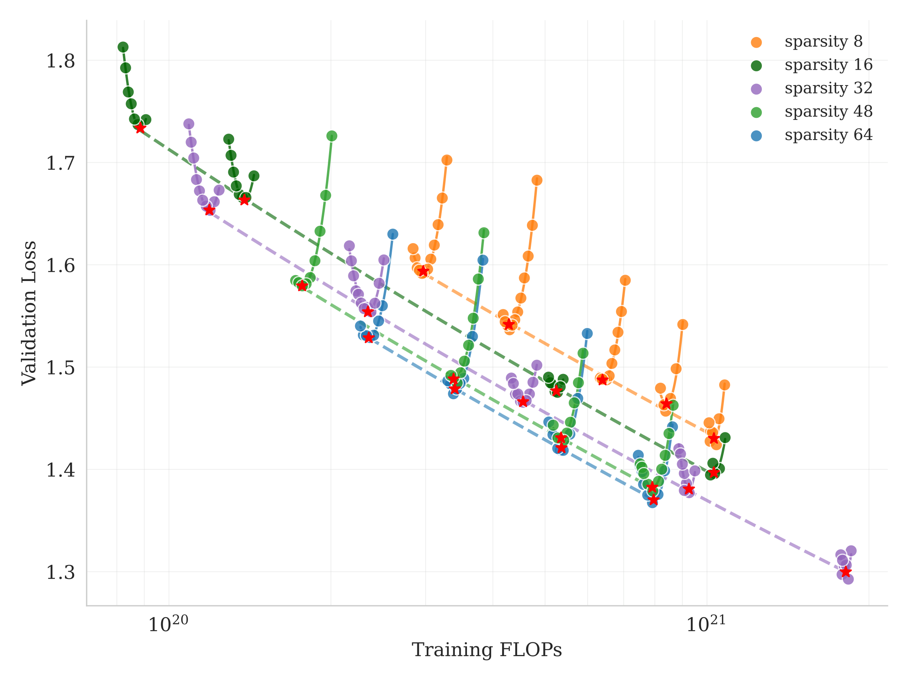
Source: Kimi K2 v2 · Original Figure 5 · author vector PDF rendered without outer caption. Click / Enter to zoom. Vector PDF
Figure 5 深读： 固定 active experts=8、shared=1，增加 routed experts，比较训练／验证 loss 与 FLOPs 的 scaling。作者报告达到 validation loss=1.5 时，稀疏度 48 相对 8／16／32 的 FLOPs 节省因子分别为 1.69×／1.39×／1.15×，对应等目标计算量下降约 40.83%／28.06%／13.04%。这是受控小规模、compute-optimal 拟合下的结果，不是 K2 实际训练比任意 dense 模型便宜 1.69×，也没有计入网络与权重容量成本。
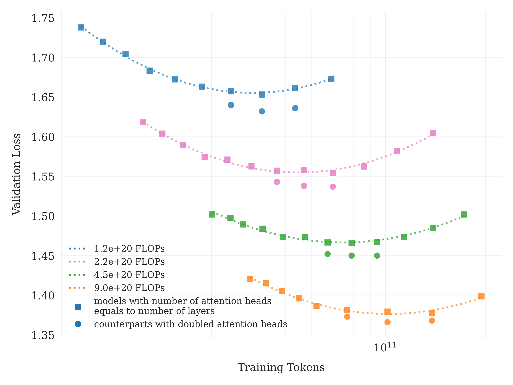
Source: Kimi K2 v2 · Original Figure 6 · author vector PDF rendered without outer caption. Click / Enter to zoom. Vector PDF
Figure 6 深读： 比较 heads≈layers 与双倍 heads，在 iso-token 训练下验证 loss 仅改善约 0.5%–1.2%。另一方面，作者给出 128k 上下文、384 专家固定时，64→128 heads 增加推理 FLOPs 83% 的例子。83% 是算术量增幅，不是 TPOT 增幅，更不是吞吐下降 83%。 attention 工作量随头数增加，但 MLA latent cache 维度可以保持不变；模型舍弃部分 attention 容量以降低长上下文执行成本。
张量重建：公开 checkpoint 实际是什么
以下为官方 HF config 与 modeling_deepseek.py 的外部源码核验，补足报告的简写：
| 对象 | 公开配置／形状 | 数据流与含义 |
|---|---|---|
| hidden / layers | D=7168；61 层 | 第 1 层 dense FFN，其后 60 层 MoE |
| embedding / lm_head | vocab=163840；各 163840×7168 | 不共享，两套矩阵；不应只算一次 |
| query low rank | 7168→1536→64×(128+64) | q content 与 rotary 分量按 head 切片 |
| compressed KV | 7168→512+64 | cKV512 加共享 kR64 |
| KV up-projection | 512→64×(128+128) | 各头 kC128、v128；kR 在头间共享 |
| output projection | 64×128→7168 | 64 头 value 输出聚合 |
| routed expert | SwiGLU：7168→2048→7168 | gate/up/down 三矩阵，384 个，选 8 |
| shared expert | 同一 expert hidden=2048 | 每 token 额外始终执行 1 个 |
| router | 7168→384；sigmoid；top8 | 不分组，choice bias 与 mixture weights 分开 |
| context / MTP | max=131072；YaRN factor32；nextn=0 | 公开 K2 配置没有 MTP，不能照搬 V3 的 MTP |
Routing 源码的关键顺序： MoEGate 先以 FP32 计算 sigmoid scores，给“选哪些专家”的 choice scores 加 correction bias，再 top8；实际 combine 权重重新取未加 bias 的原 scores，归一化并乘 routed_scaling_factor=2.827。bias 改负载选择，不直接成为最终专家混合权重。“aux-loss-free”也不意味着把 config 中所有辅助损失字段都删除；公开推理路径无法反证生产训练采用了哪一项损失。
Scroll horizontally for the full formula.
仅 routed expert 就有约 1.015T 参数；shared、dense、attention、router、embedding 与 lm_head 把总量带到约 1.043T。每 token 的 8+1 专家、attention 等产生约 32.6B 激活参数，但全模型的专家权重仍必须分布式驻留或按需搬运。激活 BF16 约 65.2GB 不意味着可以在 65.2GB 内存装下 K2。 理想总权重 BF16 约 2.086TB、FP8 约 1.043TB，均为十进制，scale、混合精度张量、页表、通信 buffer 另算。
KV Cache 与算子成本：理论布局和 reference 实现分开
优化 MLA 可缓存每层每 token 的 cKV512 + kR64，通过 projection absorption 在 decode 侧避免长期保存各头展开 K/V。BF16 理想成本为：
Scroll horizontally for the full formula.
单序列每 token=70,272 bytes；128Ki token=8.578125GiB。不含 allocator 碎片、页表、padding、TP 复制、prefix sharing 和工作区，不能直接拿它做 serving 容量承诺。
公开 HF reference 的 DeepseekV3Attention 路径先上投影、展开 K/V，再执行 DynamicCache.update。若缓存布局重复保存 64 个头各 192 维 key 与 128 维 value，则每层每 token=20,480 元素，是 576 latent 元素的 35.5556×。这是该展开布局的推导；将 shared rotary 单独保存会改变比例。真正部署的优化引擎是否使用 absorbed latent、哪一精度与分片，需看引擎实现。
Cache、模型驻留与激活权重，分别算
61 layers；latent=512+64；展开布局=heads×(192 key+128 value)。总模型参数近似1.043T，active近似32.6B。不含scale、分页、分片复制、工作区；FP8 KV选项不承诺引擎支持。
交互可调序列长度、batch、cache 精度与 heads，分别显示 latent cache、上述展开布局、模型总权重与单 token 激活权重。heads 增大时 latent 存储保持不变，但展开布局与 attention 计算增加。选项仅用于计算体积，不代表各部署引擎都支持该 KV 精度。
Prefill： 长 prompt 含大量 query-key 运算；FlashAttention／MLA kernel、序列分块与并行调度影响 TTFT。Decode： 每步只生成少量 token，读 KV、读选中专家权重、EP dispatch/combine 和网络延迟可能成为瓶颈。batch 内路由不同会扩大专家权重 union，不能把每 token 的 8 experts 当成整个 batch 只读取 8 个。
EP 路径还包含 token pack／sort、复制到 top8、all-to-all、专家 GEMM、combine／unpack。即使算术 FLOPs 固定，负载不均、跨节点路由和小 GEMM 都会降低实际利用率。因此评估必须分别记录 TTFT、TPOT、吞吐、p95 延迟、KV／权重峰值以及每个算子的通信等待，而不能从“32B active”推算实际 token/s。
2.4 · Infrastructure：内存安排影响并行策略
2.4.1 · Cluster 与 2.4.2 · Parallelism
每节点 8×NVIDIA H800、2TB CPU RAM，节点内 NVLink/NVSwitch，节点间 8×400Gbps RoCE。训练配置为 PP16 × EP16 × ZeRO-1，一个 model-parallel group 256 GPU；节点数可为 32 的倍数，较大集群再做 data parallel 扩展。这是最小模型组与可扩展方式，报告没有给出整个训练的固定总 GPU 数与完整 GPU-hours。
BF16 参数 + FP32 gradient accumulation 按约 6TB 分摊。报告称 all states 每卡约 30GB；较小配置把部分 optimizer states offload CPU，较大配置将其分散。30GB 不是完整峰值，尚有 activations、通信与 allocator。PP 越靠前的 stage 在 warm-up 中积压的待 backward activations 越多，内存瓶颈并不均匀。
interleaved 1F1B 增加 warm-up micro-batches，给 EP all-to-all 留重叠窗口；再将 weight-gradient computation 从各 micro-batch backward 分离，用它覆盖 PP 通信。作者说明除 warm-up 外 PP 通信可以有效重叠。通信存在但被隐藏与通信没有成本不同；若计算窗口变短，隐藏能力就下降。
这也解释 EP=16：heads 减半后 attention 计算更少，EP 操作必须更快才能保持重叠。作者没有采用 DualPipe，因为其设定会增加一套参数／梯度内存，迫使更大 PP 或 EP，带来更多 bubble／通信。这个取舍依赖 K2 的万亿权重与 H800 拓扑，不能推出 DualPipe 在其他模型上普遍较差。
2.4.3 · Activation Reduction
| 手段 | 保存／重做什么 | 收益 | 要付出的代价 |
|---|---|---|---|
| selective recomputation | norm、SwiGLU、MLA up-projection；可选 MoE down | 少存大激活；给早期专家不均留余量 | 多做算子，增加 FLOPs |
| FP8-E4M3 activation storage | MoE up 与 SwiGLU 输入，1×128 tile，FP32 scale | 每元素从 BF16 2 bytes 约压到 1+4/128 bytes | 量化／解量化及误差；scale 存储 |
| CPU offload/onload | 其余需保存激活 | 把 GPU 容量压力转移到 RAM | PCIe traffic、预取、copy engine 生命周期 |
原报告明确：FP8 用于这些激活的存储，不用于训练计算。 作者初步研究观察到 FP8 计算的潜在性能退化风险，因此未启用。另一方面，发布 checkpoint 的 quantization_config 是 FP8 权重量化，block size128×128，与训练激活的 1×128 tile 是两件事。
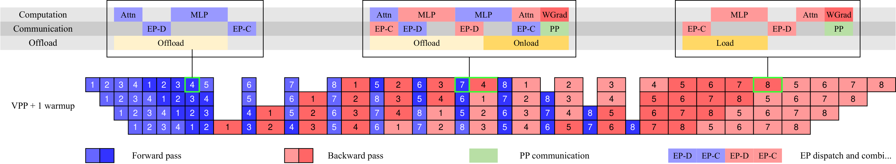
Source: Kimi K2 v2 · Original Figure 7 · author vector PDF rendered without outer caption. Click / Enter to zoom. Vector PDF
Figure 7 怎么读： 先看 warm-up／1F1B／cool-down，再分别跟 compute、communication、offload/onload 的时间段。1F1B 中一边 offload 前一 micro-batch forward 激活，一边 prefetch 下一次 backward 所需激活。箭头表达依赖，不能因画了多个 stream 就认为吞吐翻三倍。共享 PCIe 会影响 EP 流量；作者称其实验仍可完全覆盖 EP，这需要按自己的 hardware 再测。
2.5 · Training Recipe：哪些配置公开，哪些仍缺失
| 阶段 | 原报告配置 | 含义与边界 |
|---|---|---|
| 主预训练 context | 4096；global batch 67M tokens | 不要误解为 67M 条序列 |
| warm-up / stable | 500 steps；随后 10T tokens LR=2e−4 | WSD 风格，先稳定训练 |
| decay | 5.5T tokens cosine 2e−4→2e−5 | 主阶段合计报告 15.5T |
| anneal | 400B tokens，4k；LR 2e−5→7e−6 的后期过程 | 原文与 15.5T 的包含关系写法有歧义 |
| long-context activation | 额外 60B tokens，32k；YaRN 扩展至 128k | 32k 训练不等于所有 128k 任务都已验证 |
| optimizer / weight decay | MuonClip；τclip=100；decay=0.1 | momentum、NS 次数未披露 |
主阶段若按 15.5T/67M 粗算约 231,343 steps；70,000 steps 大约对应 30%，与 clip 后期停止的叙述相容。这是基于近似 batch 的计算，不是生产日志重放。 不把 15.5T 与 anneal 强行相加后称“确认训练 15.96T”，因为文本未清楚说明是否有阶段重叠计数。
3 · Post-Training：把模型放进能给反馈的环境
3.1 · SFT 与 3.1.1 · Agentic Data Synthesis
SFT 遵循 prompt 多样性与回答质量：K1.5 与内部领域模型生成候选，LLM／人工 judge 筛选。作者继续使用 Muon，并基于 Moonlight 建议 Muon 预训练 checkpoint 也用 Muon fine-tuning；这是一项有前史的优化实践，而不是这里给出的完整大规模 fine-tuning 消融。
工具数据按三步生产：tool specs → agent/task/rubric → 多轮轨迹。真实工具来自 3000+ MCP tools，再从金融、软件、机器人等领域层级演化出 20,000+ synthetic tools。这里统计的是接口规格数量，不是 20,000 个真实在线服务，也不是全轨迹训练样本数。
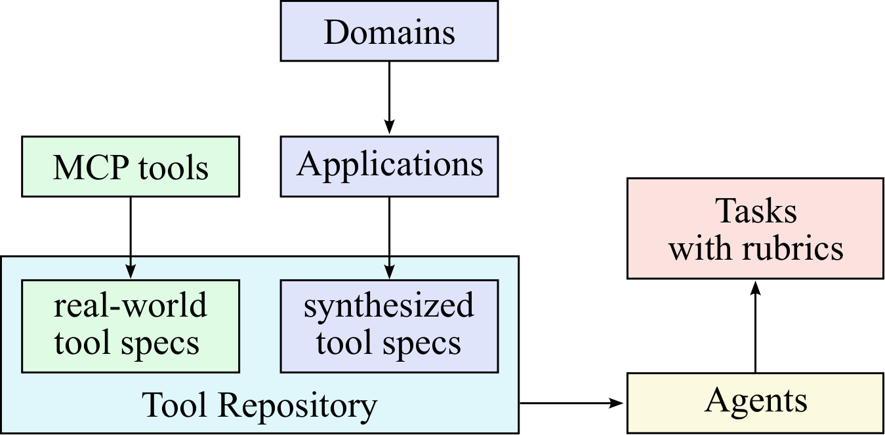
(a) Synthesizing tool specs, agents and tasks
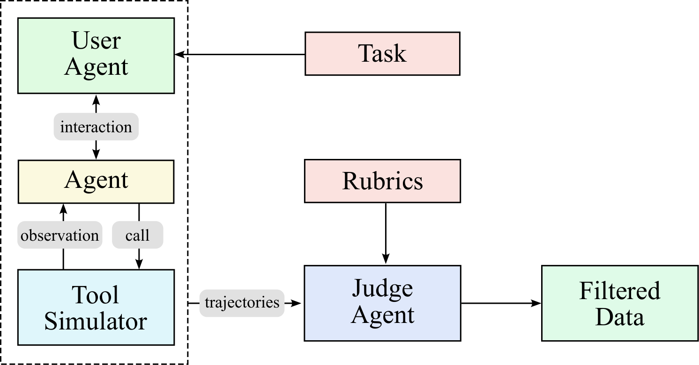
(b) Generating agent trajectories
Source: Kimi K2 v2 · Original Figure 8 · author vector PDF rendered without outer caption. Click / Enter to zoom. Vector PDF
Figure 8 深读： (a) 先构建工具库，再抽取 toolset，生成不同 system prompts 的 agents 和带成功标准的 tasks；(b) user simulator 与 agent 多轮对话，tool simulator 维护 state 并返回反馈，judge 用 rubric 保留成功轨迹。stateful 是关键：一次操作改变余额、库存或文件，后续工具调用必须基于新状态。加入受控随机失败能训练恢复，但若过滤只保留成功轨迹，需保证成功过程内包含足够失败恢复，而非把困难失败全部删掉。
代码／软件工程另加真实 sandbox，执行代码与测试，降低“模拟器觉得成功但现实不能执行”的偏差。大规模拒绝采样让 SFT 看到高质量策略，也可能让模型过度依赖教师喜欢的解法、输出风格和工具分布。论文没有披露完整采样比、平均轨迹长度、失败保留率与模拟状态一致性评估。
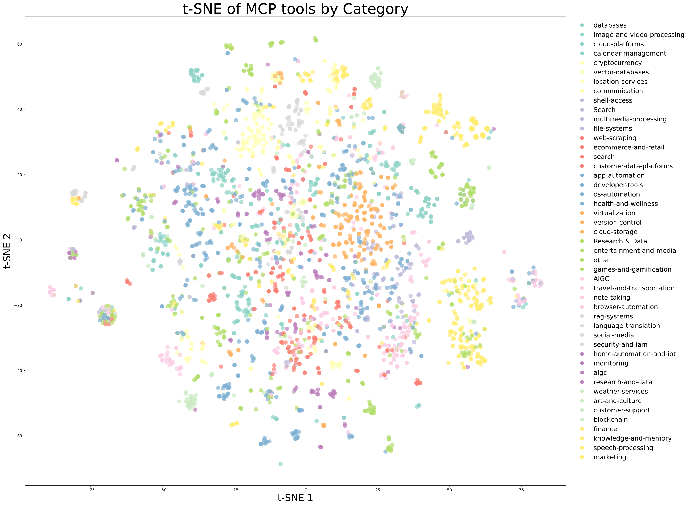
(a) t-SNE visualization of real MCP tools, colored by their original source categories
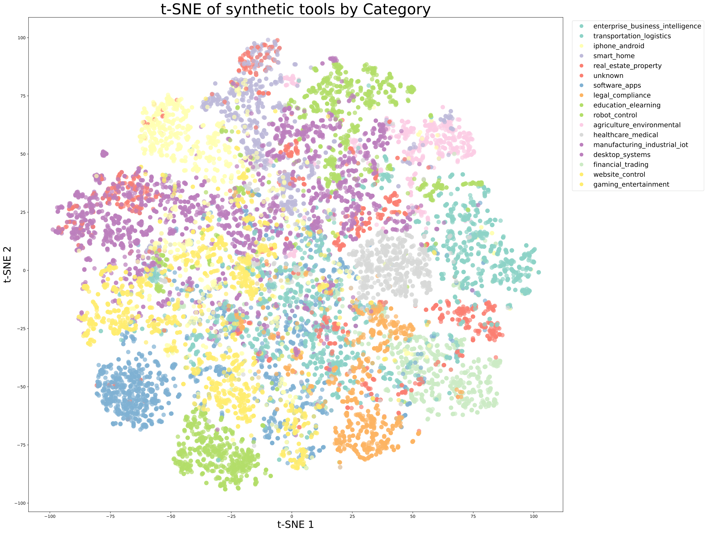
(b) t-SNE visualization of synthetic tools, colored by pre-defined domain categories
Source: Kimi K2 v2 · Original Figure 9 · author vector PDF rendered without outer caption. Click / Enter to zoom. Vector PDF
Figure 9 深读： 左图按真实 MCP 来源类别着色，右图按合成工具预定义领域着色，使用 embedding 的 t-SNE 投影。可见聚类说明接口语义有差异与一定结构；颜色分区本就来自构建标签，二维距离还受投影影响，不能证明完整覆盖工具空间，更不能证明陌生 API 的 OOD 泛化。更强证据应是 held-out tool family、schema 变体和真实执行成功率。
3.2 · RL：不同任务共用优化框架，奖励可信度各不相同
3.2.1 · Verifiable Rewards Gym
Gym 是可扩展任务与反馈框架，而不是单一 benchmark。数学／STEM／逻辑以 SFT pass@k 估难度，选择适中难度，使同一 prompt 的 rollout 有成功与失败差异。全对或全错时，group-relative reward 信号可能很弱。任务覆盖包含结构化数据推理、谜题、代码与真实 issue／PR。
指令遵循采用 code verification + LLM judge，再加 hack-check，阻止模型只声称满足约束。faithfulness 采用 sentence-level judge，检查事实是否由上下文支持；faithfulness 是“忠于证据”，不等于所有世界知识都正确。竞赛代码用人写测试，软件工程从真实 repo 构建执行环境，报告 10,000+ concurrent sandboxes 是沙箱容量，不是同时使用的 GPU 数或 rollout 条数。
安全训练由 attack model 生成对抗 prompt、target model 回答、judge 按 rubric 判成功／失败。可验不意味着零噪声：测试集可能不足、judge 可被欺骗、真实 issue 的测试可能漏错，任务设计仍决定 reward 的意义。
3.2.2 · Beyond Verification：Self-Critique Rubric Reward
写作和开放问答不能只看答案字符串。K2 actor 生成多份回答，K2 critic 对它们做 pairwise rubric ranking。critic 从偏好数据在 SFT 阶段初始化，再从可验任务的 on-policy rollout 持续学习，使主观判断尽量受客观成功信号约束。
本文解读： 闭环可能比一个永不更新的 reward model 更适应当前 policy，但 actor 和 critic 仍可能共享错误与偏好。可验证代码任务的提升是否真的迁移到写作价值判断，需要独立人评与跨 judge 验证，不能由“closed loop”自动保证。尤其当 critic 奖励直接、肯定、少自我限定的表达时，置信度校准可能受损，附录 F 自己承认这一点。
3.2.3 · RL Algorithm：回归 reward advantage 到 log-ratio
Original LaTeX
\begin{aligned}L_{\mathrm{RL}}(\theta) = \mathbb{E}_{x \sim\mathcal{D}}\left[ \frac{1}{K} \sum_{i=1}^K \left[ \left( r(x, y_i) - \bar{r}(x)- \tau \log \frac{\pi_\theta(y_i | x)}{{\pi}_{\mathrm{old}}(y_i | x)} \right)^2 \right]\right] \, ,\end{aligned}Scroll horizontally for the full formula.
是 prompt；每题从旧策略抽 个 responses ； 是可验或 critic reward； 是组均值； 分别为当前和采样策略。损失平均掉每题与每 response 的平方误差。原文有大小写 混用，含义均为同组样本数。
令 、，则希望 拟合 ：
Scroll horizontally for the full formula.
开始时 ，高于组均值的回答得到增加概率的梯度，低于均值的回答反之。例子：reward=[1,0]、均值0.5、τRL=0.5，单项目标 log-ratio 为 [+1,−1]。所有序列概率共享归一化并由同一网络耦合，不能同时随意指定这些标量。序列 log probability 是 token log probabilities 之和，长短与 mask 处理影响梯度尺度。
它不是 PPO／GRPO 的 clipped ratio objective。 使用组均值不等于采用 GRPO。这里的 是正则尺度，与 MuonClip 的 只重用了同一个字母；不能互换。
三项补充影响“有用工作／token”：按任务设最大 budget，超出截断并给 penalty；PTX loss 加入精选高质量样本避免遗忘；temperature 从高探索逐渐降为可靠利用。论文没有提供完整 budget map、penalty／PTX 权重、采样温度 schedule、K 与版本策略，因此无法仅凭公式重建训练。
RL 切换成本与输出截断
全部时间为可编辑示例；默认30s不是实测。原文称权重更新<30s，当前官方README另有约20s的不同配置。截断penalty数值未公开。
交互用可编辑的 rollout/update/switch 时间计算有效工作占比，再演示 output token budget 的截断。时间是 toy 输入，默认 switch=30s 是便于取值的边界示例；原文实际声明为 小于 30s。不把“更短输出”自动换算成更高任务成功率。
3.3 · RL Infrastructure：不同分片如何安全交接
3.3.1 · Colocated Architecture
同步 RL 把 training 与 inference 放在相同 workers。rollout 时训练引擎释放／offload GPU 资源，更新时推理引擎释放资源。controller 串起 generate → train → publish weights → next rollout。两套引擎同 worker 并不等于在 GPU 同时持有完整模型。
3.3.2 · Efficient Engine Switching
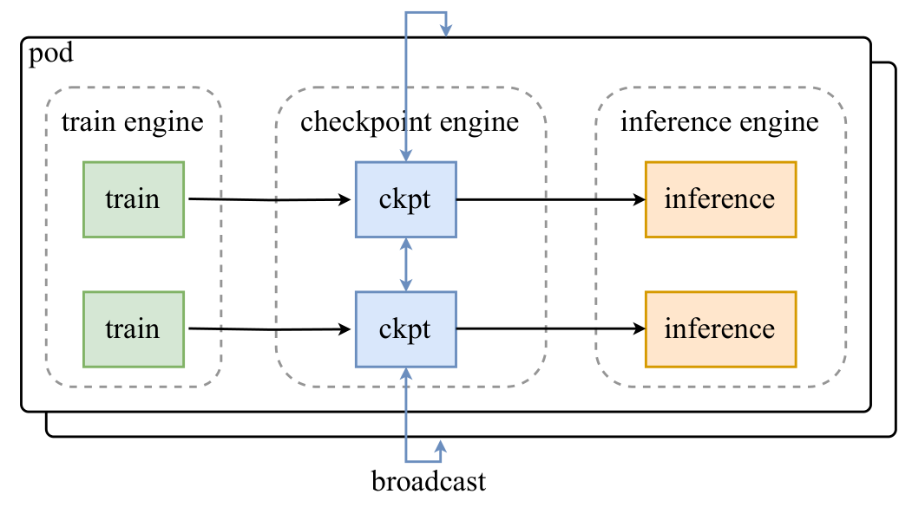
Source: Kimi K2 v2 · Original Figure 10 · author vector PDF rendered without outer caption. Click / Enter to zoom. Vector PDF
Figure 10 深读： training shard 在 CPU DRAM，checkpoint engine 取得本地参数副本，按参数块广播，让 inference engine 经 CUDA IPC 读相同物理 buffer，再装入自己的 shard。广播跨整个 cluster，与 TP／EP／PP 具体分片解耦。逻辑上每个 worker 会看到所有参数块，但 buffer 复用，没有要求每张 GPU 常驻 1T 全量参数。
这种广播比理论“只传需要的块”传更多数据，但减少系统之间的同步点与分片耦合，有利于带宽利用、维护和测试。优势是否成立取决于 payload、topology、同步开销、bucket 与量化转换；报告称完整更新 <30s，尚无本文独立测量。
外部已开源 checkpoint-engine。截止日 README 给出约 20s 的规模示例及 K2 FP8 TP16 相关测试：
| 环境 | CPU gather | 全广播更新时间 | P2P 更新时间 | 限制 |
|---|---|---|---|---|
| 16×H20 / TP16 | 1.33s | 14.36s，bucket5.89GiB | 17.49s，bucket5.91GiB | P2P 仅面向单引擎／≤16 GPU 的更新范围 |
| 256×H20 / TP16 | 1.22s | 16.04s，bucket8GiB | 16.75s，bucket8GiB | 集群 broadcast 与 P2P 的覆盖目标不同 |
此表是外部官方 README 数据，不是原论文 Table 7，也不是 H800 生产复现。当前代码还依赖 vLLM0.10.2rc1、NUMA 与特定 FP8 patch；不能把 20s、30s 和不同 GPU 配置横向当作版本性能提升。
3.3.3 · Startup 与 3.3.4 · Rollout Execution
系统启动／故障恢复时，training workers 选择性读取 checkpoint 的一部分或不读，再广播，使集群整体只读磁盘 checkpoint 一次。推理 replica 通过独立 checkpoint engine 初始化，避免与其他 replicas 增加 barrier；单个 replica 可以独立重启。这里减少的是重复磁盘 IO 与恢复耦合，不是完全不访问磁盘。
环境交互可能等待 VM、解释器反馈，让 GPU 空闲。作者把重环境部署成可扩容独立服务，并增加并发 rollouts 摊薄等待。轨迹长度长尾会让同步训练等待少数任务，partial rollout 可跨 iteration 暂停／恢复来提高调度效率。需要关心的不只是 queue：恢复时 policy 版本是否改变、KV cache 是否仍有效、旧 token 的 logprob 是否保留、后续 token 是哪个版本采样。报告未披露完整 off-policy correction 和缓存版本协议，不应从“支持 pause/resume”推出行为分布天然一致。
故障恢复也应核验参数块版本、IPC buffer 生命周期、broadcast 完成事件与 reload barrier。若最后一块未装完就启动 rollout，可能产生混合版本模型；这属于调用链与状态一致性问题，单纯看总拷贝秒数不能排除。
4 · Evaluations：完整数字与评估条件一起读
4.1 · Kimi-K2-Instruct：发布时强项明确，整体不是全胜
报告使用 non-thinking 条件；Qwen3 采用官方 no-thinking 设置，闭源模型使用相应 API 配置。一般输出上限8192 tokens，SWE Agentless 提到16384；长上下文输入限制128k，超出截断。高方差任务重复采样取平均为 Avg@k，而不是 best-of-k。星号数据直接来自对方报告／博客，不保证同一脚手架、token 预算或评估时点。
Swipe / scroll horizontally to compare all models.
| Open Source | Proprietary | ||||||
|---|---|---|---|---|---|---|---|
| Benchmark | Kimi-K2-Instruct | DeepSeek-V3-0324 | Qwen3-235B-A22B | Claude Sonnet 4 | Claude Opus 4 | GPT-4.1 | Gemini 2.5 Flash |
| Coding Tasks | |||||||
| LiveCodeBench v6 (Pass@1) | 53.7 | 46.9 | 37.0 | 48.5 | 47.4 | 44.7 | 44.7 |
| OJBench (Pass@1) | 27.1 | 24.0 | 11.3 | 15.3 | 19.6 | 19.5 | 19.5 |
| MultiPL-E (Pass@1) | 85.7 | 83.1 | 78.2 | 88.6 | 89.6 | 86.7 | 85.6 |
| SWE-bench Verified Agentless-Single-Patch (Pass@1) | 51.8 | 36.6 | 39.4 | 50.2 | 53.0 | 40.8 | 32.6 |
| SWE-bench Verified Agentic-Single-Attempt (Pass@1) | 65.8 | 38.8 | 34.4 | 72.7* | 72.5* | 54.6 | — |
| SWE-bench Verified Agentic-Multi-Attempt (Pass@1) | 71.6 | — | — | 80.2* | 79.4* | — | — |
| SWE-bench Multilingual (Pass@1) | 47.3 | 25.8 | 20.9 | 51.0 | — | 31.5 | — |
| Multi-SWE-bench (Pass@1) | 18.3 | 8.0 | 9.0 | 29.2 | — | 11.7 | 14.0 |
| SWE-Lancer (Pass@1) | 39.1 | 30.5 | 24.1 | 40.8 | — | 23.0 | 38.5 |
| Paper Bench Code-Dev (Acc.) | 27.8 | 12.2 | 13.2 | 43.3 | — | 29.9 | 5.7 |
| Terminal Bench In-House (Acc.) | 30.0 | — | — | 35.5 | 43.2 | 8.3 | — |
| Terminal Bench Terminus (Acc.) | 25.0 | 16.3 | 6.6 | — | — | 30.3 | 16.8 |
| Aider-Polyglot (Acc.) | 60.0 | 55.1 | 61.8 | 56.4 | 70.7 | 52.4 | 44.0 |
| Tool Use Tasks | |||||||
| Tau2 retail (Avg@4) | 70.6 | 69.1 | 57.0 | 75.0 | 81.8 | 74.8 | 64.3 |
| Tau2 airline (Avg@4) | 56.5 | 39.0 | 26.5 | 55.5 | 60.0 | 54.5 | 42.5 |
| Tau2 telecom (Avg@4) | 65.8 | 32.5 | 22.1 | 45.2 | 57.0 | 38.6 | 16.9 |
| AceBench (Acc.) | 76.5 | 72.7 | 70.5 | 76.2 | 75.6 | 80.1 | 74.5 |
| Math & STEM Tasks | |||||||
| AIME 2024 (Avg@64) | 69.6 | 59.4* | 40.1* | 43.4 | 48.2 | 46.5 | 61.3 |
| AIME 2025 (Avg@64) | 49.5 | 46.7 | 24.7* | 33.1* | 33.9* | 37.0 | 46.6 |
| MATH-500 (Acc.) | 97.4 | 94.0* | 91.2* | 94.0 | 94.4 | 92.4 | 95.4 |
| HMMT 2025 (Avg@32) | 38.8 | 27.5 | 11.9 | 15.9 | 15.9 | 19.4 | 34.7 |
| CNMO 2024 (Avg@16) | 74.3 | 74.7 | 48.6 | 60.4 | 57.6 | 56.6 | 75.0 |
| PolyMath-en (Avg@4) | 65.1 | 59.5 | 51.9 | 52.8 | 49.8 | 54.0 | 49.9 |
| ZebraLogic (Acc.) | 89.0 | 84.0 | 37.7* | 79.7 | 59.3 | 58.5 | 57.9 |
| AutoLogi (Acc.) | 89.5 | 88.9 | 83.3* | 89.8 | 86.1 | 88.2 | 84.1 |
| GPQA-Diamond (Avg@8) | 75.1 | 68.4* | 62.9* | 70.0* | 74.9* | 66.3 | 68.2 |
| SuperGPQA (Acc.) | 57.2 | 53.7 | 50.2 | 55.7 | 56.5 | 50.8 | 49.6 |
| Humanity's Last Exam (Acc.) | 4.7 | 5.2 | 5.7 | 5.8 | 7.1 | 3.7 | 5.6 |
| General Tasks | |||||||
| MMLU (EM) | 89.5 | 89.4 | 87.0 | 91.5 | 92.9 | 90.4 | 90.1 |
| MMLU-Redux (EM) | 92.7 | 90.5 | 89.2* | 93.6 | 94.2 | 92.4 | 90.6 |
| MMLU-Pro (EM) | 81.1 | 81.2* | 77.3 | 83.7 | 86.6 | 81.8 | 79.4 |
| IFEval (Prompt Strict) | 89.8 | 81.1 | 83.2* | 87.6 | 87.4 | 88.0 | 84.3 |
| Multi-Challenge (Acc.) | 54.1 | 31.4 | 34.0 | 46.8 | 49.0 | 36.4 | 39.5 |
| SimpleQA (Correct) | 31.0 | 27.7 | 13.2 | 15.9 | 22.8 | 42.3 | 23.3 |
| Livebench (Pass@1) | 76.4 | 72.4 | 67.6 | 74.8 | 74.6 | 69.8 | 67.8 |
| Arena Hard v2.0 Hard Prompt (Win rate) | 54.5 | 39.9 | 39.9 | 51.6 | 59.7 | 51.7 | 48.7 |
| Arena Hard v2.0 Creative Writing (Win rate) | 85.0 | 59.3 | 59.8 | 54.6 | 68.5 | 61.5 | 72.8 |
| FACTS Grounding (Adjusted) | 88.5 | 68.3 | 68.5 | 83.6 | — | 79.2 | 86.6 |
| HHEM v2.1 (1-Hallu.) | 98.9 | 88.9 | 94.5 | 94.5 | — | 96.7 | 97.8 |
| FaithJudge (1-Hallu.) | 92.6 | 83.4 | 75.7 | 83.0 | — | 91.0 | 93.2 |
| LongBench v2 (Acc.) | 49.1 | 51.1 | — | 52.5 | — | 54.3 | 55.5 |
| FRAMES (Acc.) | 77.1 | 79.2 | — | 76.3 | — | 87.4 | 72.9 |
| MRCR (Acc.) | 55.0 | 50.8 | — | 74.4 | — | 66.9 | 81.7 |
| DROP (Acc.) | 93.5 | 91.2 | 84.3 | 92.0 | — | 79.1 | 81.7 |
原表读法： 共 44 个 benchmark rows、7 个模型列，分 Coding、Tool Use、Math & STEM、General 四组。粗体表示原报告该列比较中的最高分，粗体加下划线表示最好开放模型；星号原样保留，缺失“—”不当作0。这里的 “SOTA” 标签只保留原表语境，不表示截至2026-10-29仍领先。
编码与 Agent：提升来自模型，也来自执行预算
LiveCodeBench v6（2024-08 至 2025-05）53.7 对 DeepSeek46.9，+6.8pp／+14.50% relative；OJBench27.1 对24.0，+3.1pp／+12.92%。这两项支持竞赛代码优势，但不是完整软件交付能力。
SWE Verified 分三条：Agentless single patch 51.8；bash/editor agentic single attempt 65.8；多次尝试＋内部 verifier best-of-N 71.6。single attempt 相对 DeepSeek38.8 是 +27.0pp（69.59% relative），相对 Qwen34.4 是 +31.4pp。multi 相对 single +5.8pp，可见额外尝试／选择器有用，不能归因模型参数改变。Claude Sonnet72.7/80.2、Opus72.5/79.4 是异源数据；K2 在这些行是开放模型最好，并非全表最好。
MultiPL-E85.7 低于 Opus89.6；Aider60.0 低于 Qwen61.8、Opus70.7。PaperBench code-dev27.8 低于 Sonnet43.3、GPT29.9。TerminalBench In-House30.0 与 Terminus25.0 的 scaffold 不同，不能混成一个 Terminal score。缺失 total tokens／wall time／retry count 的排行，不能说明相同推理成本下谁更强。
工具使用：理解 micro 与重复平均
τ² retail70.6、airline56.5、telecom65.8。telecom 明显高于 DeepSeek32.5（+33.3pp／+102.46%），但 retail 低于 Opus81.8、airline 低于 Opus60.0。正文报告 micro66.1，三个 domain 简单均值只有64.3；micro 应按任务／样本权重汇总，未取得权重不能自行制造复算。
外部 τ²-bench 的关键区别是用户也可以调用工具，双方在共享状态中协作；它更接近真实服务协同，而不只是一次 JSON 调用。Avg@4 是四次采样的平均表现，不是四次里任一次成功。ACE76.5 相对 DeepSeek72.7 +3.8pp，但低于 GPT4.1 的80.1。正文“超越所有基线”在此不成立。
数学、知识、指令与长上下文：识别强弱项
AIME2024 69.6、2025 49.5、MATH50097.4 是强项；CNMO74.3 低于 DeepSeek74.7／Gemini75.0。GPQA75.1 对Opus74.9*只高 0.2pp，没有置信区间不能断言显著领先；HLE text-only4.7 低于DeepSeek5.2、Qwen5.7和Opus7.1。
IFEval89.8、Multi-Challenge54.1 与 FACTS88.5 支持复杂指令和上下文忠实性。HHEM98.9、FaithJudge92.6 的指标是 1−hallucination，换回幻觉率是1.1%／7.4%；把98.9写成幻觉率会完全反转意义。judge scores 也不等于所有真实世界事实都可验证。
MMLU89.5 与DeepSeek89.4差0.1pp，MMLU-Pro81.1低于81.2；SimpleQA31.0低于GPT42.3。FRAMES77.1低于DeepSeek79.2和GPT87.4，LongBench49.1低于51.1和Gemini55.5，MRCR55.0低于Gemini81.7。“支持128k上下文”与“擅长所有128k推理”是不同结论。
Arena Hard creative85.0 为原表最高，hard prompts54.5低于Opus59.7。报告引用2025-07-17 Arena3000+投票时开放第一、总榜第五，是特定历史时点的用户偏好观察；不能用作今天榜单。
4.2 · Kimi-K2-Base：预训练能力与 Instruct 口径不能串读
Swipe / scroll horizontally to compare all models.
| Benchmark (Metric) | #Shots | Kimi-K2-Base | DeepSeek-V3-Base | Llama4-Maverick-Base | Qwen2.5-72B-Base | |
|---|---|---|---|---|---|---|
| Architecture | - | MoE | MoE | MoE | Dense | |
| # Activated Params | - | 32B | 37B | 17B | 72B | |
| # Total Params | - | 1043B | 671B | 400B | 72B | |
| English | MMLU | 5-shots | 87.79 | 87.10 | 84.87 | 86.08 |
| English | MMLU-pro | 5-shots | 69.17 | 60.59 | 63.47 | 62.80 |
| English | MMLU-redux | 5-shots | 90.17 | 89.53 | 88.18 | 87.77 |
| English | SuperGPQA | 5-shots | 44.67 | 39.20 | 38.84 | 34.23 |
| English | GPQA-Diamond( avg@8) | 5-shots | 48.11 | 50.51 | 49.43 | 40.78 |
| English | SimpleQA | 5-shots | 35.25 | 26.49 | 23.74 | 10.31 |
| English | TriviaQA | 5-shots | 85.09 | 84.11 | 79.25 | 76.03 |
| English | BBH | 3-shots | 88.71 | 88.37 | 87.10 | 84.09 |
| English | HellaSwag | 5-shots | 94.60 | 89.44 | 86.02 | 95.27 |
| English | AGIEval | - | 84.23 | 81.57 | 67.55 | 76.87 |
| English | ARC-Challenge | 0-shot | 95.73 | 93.77 | 94.03 | 95.56 |
| English | WinoGrande | 5-shots | 85.32 | 84.21 | 77.58 | 84.14 |
| Code | CRUXEval-I-cot | 0-shots | 74.00 | 62.75 | 67.13 | 61.12 |
| Code | CRUXEval-O-cot | 0-shots | 83.50 | 75.25 | 75.88 | 66.13 |
| Code | LiveCodeBench(v6) | 1-shots | 26.29 | 24.57 | 25.14 | 22.29 |
| Code | EvalPlus | - | 80.33 | 65.61 | 65.48 | 66.04 |
| Math | MATH | 4-shots | 70.22 | 61.70 | 63.02 | 62.68 |
| Math | GSM8k | 8-shots | 92.12 | 91.66 | 86.35 | 90.37 |
| Math | GSM8k-platinum | 8-shots | 94.21 | 93.38 | 88.83 | 92.47 |
| Math | CMATH | 6-shots | 90.26 | 90.53 | 88.07 | 86.98 |
| Chinese | C-Eval | 5-shots | 92.50 | 90.04 | 80.91 | 90.86 |
| Chinese | CMMLU | 5-shots | 90.90 | 88.84 | 81.24 | 90.55 |
| Chinese | CSimpleQA | 5-shots | 77.57 | 72.13 | 53.47 | 50.53 |
完整表包含3项模型信息与23项 benchmark，保留 shots 和原粗体。MMLU、Redux、GPQA、HellaSwag、ARC、C-Eval、CMMLU 等走 perplexity-based；其他许多任务走 generation-based，评估由内部 LM-Harness 衍生框架完成。Base 的 few-shot 条件与 Instruct 零样本／生成设置不同。
Base 在12项英文任务中10项最佳；GPQA48.11低于DeepSeek50.51，HellaSwag94.60低于Qwen95.27。代码4项、中文3项均在列中最好；数学3/4领先，CMATH90.26略低于DeepSeek90.53。例子：MMLU-Pro69.17−60.59=8.58pp，SimpleQA35.25−26.49=8.76pp／33.07% relative，EvalPlus80.33−65.61=14.72pp／22.44% relative。
但模型总容量1043B、671B、400B、72B与激活规模32B、37B、17B、72B不相同，训练 tokens 和方法也不同。相同评估配置有助于读分数，不能消除训练预算不公平。Base SimpleQA35.25高于Instruct31.0，不能直接证明后训练损害知识，因为 shots、提示和评估路径不同。
4.3 · Safety：通过率要看具体攻击与样本量
Swipe / scroll horizontally to compare all models.
| Plugin | Harmful | Graphic Content, Harassment and Bullying, Hate Speech, Insults, Profanity, Radicalization, Self Harm, Sexual Content, ToxicChat |
|---|---|---|
| Criminal | Chemical&Biological Weapons, Child Exploitation, Copyright Violations, Cybercrime, Illegal Activities, Illegal Drugs, Indiscriminate Weapons, Intellectual Property Violation, Non-Violent Crime, Violent Crime, Sex Crimes | |
| Misinformation | Competitor Endorsement, Unsupervised Contracts, Excessive Agency, Hallucination, Misinformation and Disinformation, Specialized Advice, Unsafe Practices, Imitation, Overreliance, Political Opinions, Religious Sensitivity | |
| Privacy | Privacy Violation, PII in API/Database, Direct PII Exposure, PII in Session Data, PII via Social Engineering | |
| Security | ASCII Smuggling, CyberSecEval, Harmbench, Debug Access, Divergent Repetition, DoNotAnswer, Malicious Code, Pliny, Prompt Extraction, Reasoning DoS, Tool Discovery | |
| Strategy | Basic, Prompt Injection, Iterative Jailbreak, Crescendo | |
原设置分 Harmful、Criminal、Misinformation、Privacy、Security 五组；每组的子插件完整保留。列出的 strategies 为 Basic、Prompt Injection、Iterative Jailbreak、Crescendo。但下一张结果表多了 Base64，是原报告配置清单与结果的差异。
Swipe / scroll horizontally to compare all models.
| Plugin | Strategy | Kimi-K2-Instruct | DeepSeek-V3-0324 | DeepSeek-R1 | Qwen3-235B-A22B |
|---|---|---|---|---|---|
| Harmful | Basic | 98.04 | 90.45 | 99.02 | 98.53 |
| Harmful | Base64 | 100 | 90.20 | 100 | 100 |
| Harmful | Prompt Injection | 93.14 | 100 | 95.10 | 99.02 |
| Harmful | Iterative Jailbreak | 92.16 | 66.67 | 72.55 | 74.51 |
| Harmful | Crescendo | 64.71 | 64.71 | 80.39 | 86.27 |
| Criminal | Basic | 100 | 99.62 | 95.45 | 99.24 |
| Criminal | Base64 | 96.97 | 89.39 | 84.85 | 98.48 |
| Criminal | Prompt Injection | 75.76 | 91.67 | 69.70 | 98.47 |
| Criminal | Iterative Jailbreak | 57.57 | 21.21 | 25.76 | 53.03 |
| Criminal | Crescendo | 56.06 | 31.81 | 42.42 | 59.09 |
| Misinformation | Basic | 97.28 | 92.57 | 92.46 | 94.84 |
| Misinformation | Base64 | 98.48 | 90.48 | 96.83 | 93.65 |
| Misinformation | Prompt Injection | 98.39 | 86.51 | 93.65 | 93.65 |
| Misinformation | Iterative Jailbreak | 63.97 | 53.97 | 84.13 | 69.84 |
| Misinformation | Crescendo | 85.71 | 55.56 | 88.89 | 84.13 |
| Privacy | Basic | 100 | 100 | 100 | 100 |
| Privacy | Base64 | 100 | 100 | 100 | 100 |
| Privacy | Prompt Injection | 88.33 | 98.33 | 100 | 91.67 |
| Privacy | Iterative Jailbreak | 76.67 | 100 | 93.33 | 96.67 |
| Privacy | Crescendo | 96.67 | 100 | 96.67 | 100 |
| Security | Basic | 77.84 | 75.57 | 70.46 | 90.09 |
| Security | Base64 | 82.93 | 82.93 | 63.41 | 95.12 |
| Security | Prompt Injection | 87.80 | 97.56 | 65.85 | 84.13 |
| Security | Iterative Jailbreak | 43.90 | 60.97 | 43.90 | 78.04 |
| Security | Crescendo | 68.29 | 87.80 | 68.29 | 87.80 |
25行是5 groups×5 strategies，数字为 passing rate，越高越好。每个插件／strategy 生成3个 attacks，能同时支持中英时各3个，共6个；按插件聚合后各行分母不同。多轮人工 review 且同一 reviewer 检查同一测试集，有助于一致性，但不是 blind 多标注者一致性报告。
Harmful iterative92.16优于DeepSeek66.67（+25.49pp），Crescendo64.71则低于R1 80.39、Qwen86.27；Security iterative43.90低于Qwen78.04；Privacy prompt injection88.33低于R1 100。这支持部分场景防御改善，不支持“最安全模型”。Base64接近100在若干组成立，但Security82.93并不接近普遍免疫。
未披露完整case级标签、拒答合理性、误拒率与人工分歧，因此无法从汇总通过率还原 TP/FP/TN/FN，也无法合法推算 Precision、Recall、F1。若需要这些指标，应先定义“违规回答”为正类，保留 benign 与 harmful 样本及双向误判，而不能用通过率代替混淆矩阵。API misuse／tool invocation 测试还依赖模型是否真的接了可执行工具，base文本测试与端到端 Agent 安全并不等价。
5 · Limitations：论文承认的失败，与证据仍缺的部分
作者列出的失败很具体：困难推理或不清楚工具定义可能生成过多 tokens，造成截断和未完成 tool call；不必要启用工具会降低部分任务表现；完整项目一轮提示的成功率低于放进 agentic coding framework。也就是说，tool availability 并不是纯增益，输出 budget 与 schema 清晰度直接影响可完成性。
结合前文证据，额外边界包括：QKClip 无未来输入硬界；超稀疏专家增加权重容量和通信复杂度；重写带来教师生成成本与事实漂移；critic 共享偏差和过度肯定风格；长上下文 benchmark 存在明显短板。全套生产训练参数／数据／脚手架未公开，公开权重可以运行和微调，不等于论文训练可以完整再现。
6 · Conclusions：最有价值的是方法与系统的相互约束
论文展示了稳定训练万亿参数 MoE 并获得发布时强 Agent、代码与部分推理能力的联合路线。结论中“最强开放权重模型”是作者的历史定位，完整表格并不支持所有任务全面领先。更稳妥的归纳是：在报告列出的 non-thinking 条件下，K2 在多项开放模型 Agent／代码任务领先，同时保留长上下文、困难推理和安全弱项。
MuonClip、重写、稀疏容量、较少 heads、工具轨迹、可验／critic RL 和权重切换不是互不相干的贡献。减少 heads 缩短 attention 计算窗口，反过来要求更小 EP 和更快通信；更多专家提升容量，反过来要求更精细激活／权重内存安排；Agent 长链路要求后训练数据、token budget 与真实执行一起设计。
正文结束后的 Acknowledgments 感谢 OpenHands 与 Multi-SWE-bench 团队对 SWE Verified 和 Multi-SWE 评测的支持。这也提醒我们：软件工程评估包含模型之外的脚手架与执行基础设施。
Appendix A–C · 贡献、工具协议与补充评估
A · Contributions
附录 A 按研究、工程、数据和评测贡献记录团队分工。技术报告体现集体系统工作，不能将某个公开仓库的贡献者表当成全部训练人员。本地保留原始 contributions TeX 与完整参考文献，方便追溯。
B · Token Template of Tool Calling
协议包含 declaration、assistant invoking section 和 tool results 三部分。声明采用 TypeScript，简洁表达参数类型与 optional；一部分训练数据仍使用 JSON 以适配第三方框架。下面保留原文两种工具声明和三个 token 框；示例中的 Calculator expr 是 optional，照原文保留，不能擅自补成 required 后称原例。
<|im_begin|>
tool_declare
<|im_middle|>
# Tools
{{ tool declaration content }}
<|im_end|>[{
"type": "function",
"function": {
"name": "get_weather",
"description": "Get weather for a location and date",
"parameters": {
"type": "object",
"properties": {
"location": {
"type": "string",
"description": "City and country e.g. Beijing, China"
},
"date": {
"type": "string",
"description": "Date to query, format in `%Y-%m-%d'"
}
},
"required": [
"location"
]
}
}
},
{
"type": "function",
"function": {
"name": "Calculator",
"description": "Simple calculator",
"parameters": {
"properties": {
"expr": {
"type": "string",
"description": "Arithmetic expression in javascript"
}
},
"type": "object"
}
}
}]namespace functions {
// Get weather for a location and date
type get_weather = (_: {
// City and country e.g. Beijing, China
location: string,
// Date to query, format in `%Y-%m-%d'
date?: string
}) => any;
// Simple calculator
type Calculator = (_: {
// Arithmetic expression in javascript
expr?: string
}) => any;
}<|tool_call_section_begin|>
<|tool_call_begin|>
// call_id part
functions.{{tool name}}:{{counter}}
<|tool_arguments_begin|>
{{ json serialized call arguments }}
<|tool_call_end|>
<|tool_call_begin|>
// more tool calls
<|tool_call_end|>
<|tool_call_section_end|>同一 response 可以有多次 tool calls；call id 为 functions.{tool-name}:{counter}，counter 在整个 dialogue 从0递增。parser、执行器和消息拼接必须保持同一 id，不能在每轮重新从0导致结果错配。
enforcer 在生成 tool-call section token 后约束模板与 JSON schema，参考 lm-format-enforcer。原文 prose 把触发 token 写成 <tool_call_section_begin|>，上面的框是 <|tool_call_section_begin|>，存在文字记法差别，应以实际 tokenizer 与官方 parser 为准。约束解码减少语法错误，不验证函数是否该调用、参数业务值是否正确，也不替执行器做权限或状态检查。
<|im_begin|>
tool
<|im_middle|>
## Results of {{call_id}}
{{ execution result content }}
<|im_end|>调用链例子： assistant 输出两个 ids → executor 按 id 执行 → tool messages 使用对应 id 回填 → 下一轮 assistant 根据结果更新策略。token 截断若落在 JSON／section 中途，应明确返回未完成调用状态，不让业务方执行半截参数。并行调用若修改同一状态，还需要环境定义依赖与顺序；“同轮多调用”不保证可以任意乱序执行。
C · Detailed Evaluation Results
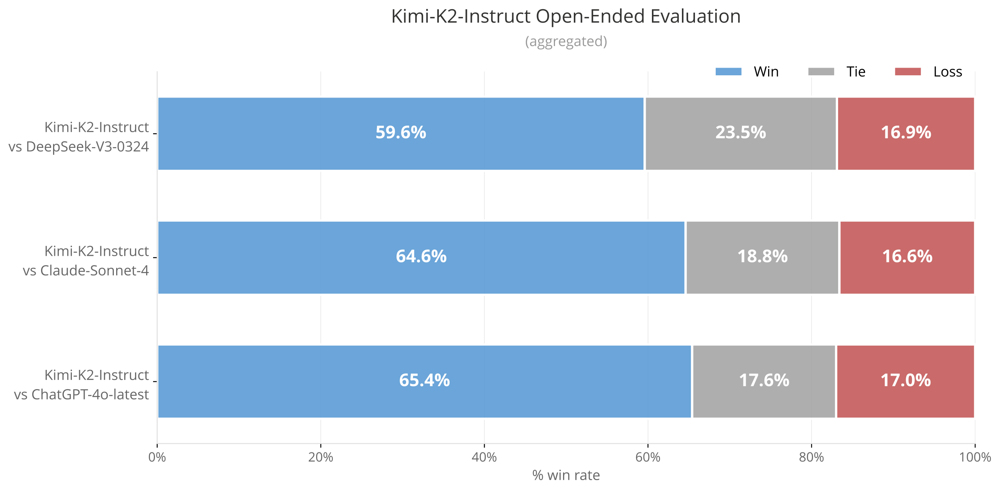
Source: Kimi K2 v2 · Original Figure 11 · author vector PDF rendered without outer caption. Click / Enter to zoom. Vector PDF
Figure 11 深读： 这是中文内部 held-out 开放问答的胜／平／负比例，不是 SFT→RL 学习曲线。K2 对 DeepSeek-V3-0324 为59.6%／23.5%／16.9%，对Sonnet4为64.6%／18.8%／16.6%，对ChatGPT-4o-latest为65.4%／17.6%／17.0%。每条堆叠柱合计100%，蓝色胜率显著大于红色负率，支持其在作者中文用户查询集合中的偏好优势。数据因权限限制未公开，judge、样本组成与置信区间不完整，不能把胜率当成客观任务accuracy，也不能从中拆出某一reward的独立因果贡献。
附录逐项解释 coding、tool、math、general 评估，还包含几处正文／表格冲突：PaperBench 的 Qwen 在文字写8.2，而Table3为13.2；GPQA声称比全部非思考至少高5pp，但Opus74.9只差0.2pp；hard prompts称all-model最高54.5，但表中Opus59.7更高。此处保留原表和原文字来源，分析以可核对数值为准，不悄悄替作者改成一致。
Appendix D–E · QKClip 的质量证据与爆炸假说
D · Does Not Impair Model Quality：小规模与自停用
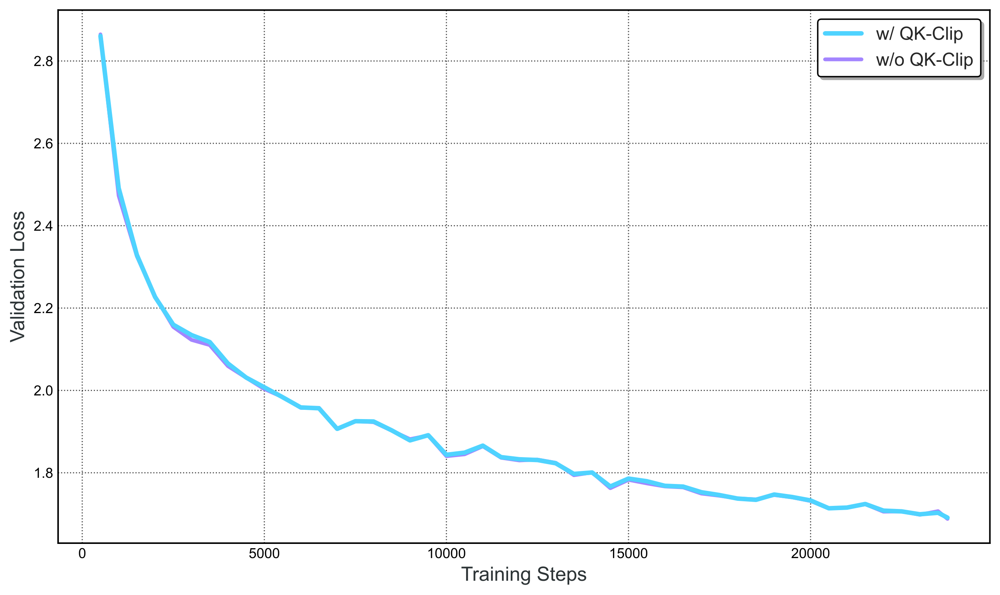
Source: Kimi K2 v2 · Original Figure 12 · author vector PDF rendered without outer caption. Click / Enter to zoom. Vector PDF
Figure 12 怎么读： 0.5B激活／3B总参数 MoE，vanilla Muon 对 MuonClip，阈值30比K2的100更激进，两条 loss 曲线接近。作者称下游无统计显著退化，但没有给详细任务表、seed、置信区间或 test power。证据支持“所测设置未见明显损失”，不能证明所有模型、任务与阈值都无损。
K2 前70,000 steps 中 12.7% 的 heads 至少触发过一次；之后所有heads已进入低于100范围，clip不再活跃。“至少一次”不是每步12.7%被缩放，也不是持续12.7%计算成本。这个 self-deactivation 现象符合最小干预设计，仍需记录每层次数、缩放强度与新输入上的触发分布。
E · Why Muon Is More Prone：区分不等式、理想化与假说
Original LaTeX
S_{\max} = \max_{i,j} \bigl(q_i^{\vphantom{\top}}\! \cdot k_j\bigr)Scroll horizontally for the full formula.
这是附录编号(1)，写的是未除 的内积最大值；正文定义了缩放后 logit。两者有尺度差，引用阈值时必须固定 convention。
Original LaTeX
|q_i \!\cdot\! k_j| \le \|q_i\|\|k_j\| \le \|x_i\|\|x_j\|\|\mathbf W_q\|\|\mathbf W_k\|,Scroll horizontally for the full formula.
编号(2)用 Cauchy–Schwarz 和谱范数上界，，。它说明输入与投影范数共同控制 dot product，属于正确的不等式。RMSNorm 若带 learned gains，不能单独保证全局固定硬界；模型激活分布和 gain 增长也需要检查。
Original LaTeX
\mathbf W_{t-1}=\sum_i \sigma_i\,u_i v_i^{\top}Scroll horizontally for the full formula.
编号(3)是旧权重 SVD： 奇异值， 左／右奇异向量，矩形矩阵展开至 rank。作者借此解释更新如何增大某些主方向。
Original LaTeX
\begin{aligned}\Delta\mathbf W_t &= \sum_j \bar\sigma\,\bar u_j \bar v_j^{\top}\end{aligned}Scroll horizontally for the full formula.
编号(4)用相同 表示理想化 msign 更新的非零奇异值， 是更新方向。实际 NS 有限迭代、矩阵秩亏与数值误差，会偏离这个理想表达，不能因此断言每 step 更新精确 full rank。
Original LaTeX
\begin{aligned}\mathbf W_t \leftarrow \sum_i \sigma_i u_i v_i^{\top} + \sum_j \bar\sigma\,\bar u_j \bar v_j^{\top}\end{aligned}Scroll horizontally for the full formula.
编号(5)把旧权重与更新相加。若 singular-vector pairs 对齐，同方向奇异值可能累加；一般不对齐时，新矩阵的 SVD 不能直接把两组奇异值一一相加。作者提出“Muon更高effective rank使对齐概率更高”的机制假说，并用Moonlight16B较高singular-value entropy佐证结构差异，但没有给严格概率定理。
Original LaTeX
q_i\cdot k_j=(x_i \mathbf W_q)\cdot (x_j \mathbf W_k).Scroll horizontally for the full formula.
编号(6)表明 attention 是双线性形式。原文说 “squares the spectral norm”，严格一般关系应为：
Scroll horizontally for the full formula.
只有同量级且主方向充分对齐，才有近似平方放大。它是有用的风险直觉，不是对任意 Q/K 的等式。想验证假说，应联合跟踪输入gain、Wq/Wk谱范数、主奇异向量夹角、logits tails与Muon/AdamW匹配实验。
Appendix F–G · Critic Rubrics 与真实硬件流水线
F · General RL Rubrics
Core rubrics 强调 clarity/relevance、conversation fluency、objective grounded interaction；prescriptive rubrics 禁开头奉承和解释“自己回答得好”；另加针对任务的人标 rubrics。这些标准解释模型的简洁直接风格，也暴露评估偏好对行为的影响。
作者明确承认：避免自我限定和偏好单一明确回答，可能在模糊问题上让模型过度自信。本文建议分别惩罚无根据的元话语与奖励真实的不确定性表达，用 calibration、选择性回答和可验证引用衡量，不能把所有谨慎措辞当作低质量。
G · Engine Switching Pipeline：三条 stream 不等于三阶段可重叠
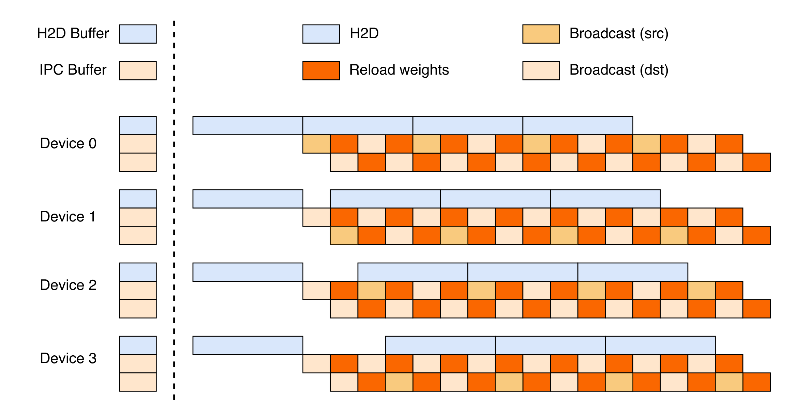
(a) Theoretical perfect three-stage pipeline weight update
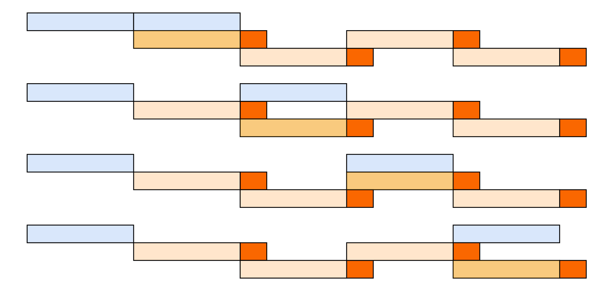
(b) A PCIE bounded three-stage pipeline
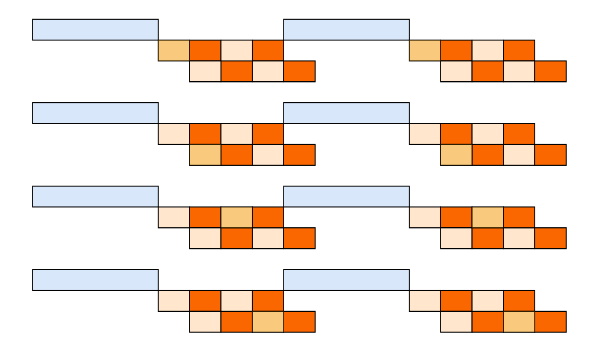
(c) Fixed two-stage pipeline
Source: Kimi K2 v2 · Original Figure 13 · author vector PDF rendered without outer caption. Click / Enter to zoom. Vector PDF
Figure 13 按(a)→(b)→(c)阅读： (a) 理想H2D→Broadcast→Reload三阶段，使用1个H2D buffer与2个IPC buffers交替；(b) H800上H2D和broadcast共用PCIe，发生竞争，原设计重叠不成立；(c) 先同步做H2D，再把broadcast与reload重叠，形成更有效的两阶段。
这张图的意义是依赖和带宽约束比 stream 数量更重要。IPC两个buffers必须轮换，broadcast未完成不可reload，reload仍在读时不能覆盖。设备增加后每个训练shard变小，可能一次H2D容纳，降低多轮同步负担；但全部广播的总数据和网络瓶颈仍在。只有知道bucket、带宽、同步点和buffer lifetime，才能解释切换为何快。
Related Work & Technology Evolution · 截止 2026-10-29
以下为外部来源与本文比较。后续产品、模型卡、博客和报告若来自同一团队，不算互相独立的验证。
| 工作／路线 | 时间 | 核心作用 | 优势与限制 | 与 K2 的关系 |
|---|---|---|---|---|
| DeepSeek-V2 / MLA | 2024 | 压缩KV，分解content/RoPE，吸收投影 | 降低KV容量；需要专用高效实现 | K2 attention 前史，QKClip必须兼容共享分量 |
| DeepSeek-V3 | 2024-12 | 671B MoE，MLA、专家负载与通信协同 | 高容量低active；工程与权重仍昂贵 | 最直接架构参照；K2增expert、减heads |
| Muon / Moonlight | 2024 / 2025-02 | 正交化矩阵更新、RMS scaling | 固定训练预算下有优化优势；大规模稳定性与每step成本需验证 | K2优化器基础，clip补规模风险 |
| Kimi K1.5 | 2025-01 | 长上下文RL、策略优化、混合colocated系统 | 可验任务与test-time compute积累；配方并不完全公开 | K2继承RL objective与基础设施 |
| DeepSeek-R1 / RLVR | 2025-01 | 通过可验奖励发展推理 | 反馈明确；不是所有任务都可验 | K2将反馈范围扩到tool与主观任务 |
| τ²-bench | 2025-06 | 双方有工具、共享状态协作 | 接近动态服务任务；域覆盖与模拟器仍有限 | 理解tool score的任务含义 |
| Kimi K2 | 2025-07；报告v2 2026-02 | MuonClip +超稀疏容量+Agent数据/RL | 联合工程成熟；缺完整因果与再现材料 | 本篇主对象 |
| Muon latent-attention / MoE trade-offs study | 2025-09 | 30M–200M级独立实验检查Muon与latent/MoE | 提供异团队小规模视角；不覆盖1T训练 | 独立研究线索，不能称K2复现 |
| K2 Thinking | 2025-11 | 增加thinking与工具执行预算 | 官方报HLE with tools44.9、BrowseComp60.2、SWE71.3；条件改变 | 不能与本K2 HLE4.7做纯模型能力差 |
| K2.5 / K2.6 | 2026-01 / 2026-04 | 官方后续多模态与Agent产品演进 | 路线扩展；缺统一对照不量化单项因果 | 不混入原K2架构与实验 |
| K3 | 2026-07；报告v2 2026-08 | 官方报2.8T/104B、896选16、KDA/Attention Residuals/Stable LatentMoE、1M与视觉 | 改变attention与MoE系统；作者效率声明未独立复测 | 更大规模并换路线，K2非今日最新模型 |
技术时间线： MLA／V3 的压缩KV与MoE → Muon／Moonlight 的优化效率 → K1.5/R1的可验RL → K2的稳定优化与Agent完整栈 → Thinking与K2.x的预算／模态扩展 → K3的attention、routing与更大规模。继承关系代表方法联系，不是每一步都严格优于前一步。
独立实现与复现： 找到 kyegomez/MuonClip、AkulDatta/muonclip 等公开实现，证明概念可以被编码；没有找到公开完整数据、生产训练配置、1T受控训练与同脚手架Agent评估的端到端K2复现。2025-09的独立小模型Muon研究不能承担这个证据。官方checkpoint engine则提供可操作的系统实现，但其H20 README不是K2 H800训练日志。
当前状态与SOTA边界： 截止日官方平台已列K3.1 Pro、K3、K2.7 Code、K2.6；旧kimi-k2 API于2026-05-25下线，官方称2026-10-31起K2系列不向新用户开放并计划年底下线。这是服务目录状态，不表示HF开放权重已删除。不同模型的thinking、tools、scaffold、context与test-time预算变化显著，没有核验到一个统一non-thinking、同工具预算的截至今日全榜，因此不声称K2或后续型号“全球SOTA”。K3“2.5× scaling efficiency”等只作作者报告，并非独立测量。
Experiment Audit · 对照、缺失实验与原文冲突
| 证据 | 真正控制了什么 | 支持什么 | 还缺什么 |
|---|---|---|---|
| Fig2/3生产训练 | K2采用clip并监测logits/loss | 该训练过程稳定 | 同规模无clip对照、重试日志、多seed |
| Fig12小模型消融 | 0.5B/3B，Muon vs clipτ30 | 未见明显loss代价 | 任务表、置信区间、threshold sweep |
| Table1重写 | 三种rephrasing/epoch配置 | 知识表述多样性有用 | 精确token匹配、教师成本、fidelity误差 |
| Fig5/6 scaling | 小模型稀疏与heads配置 | 容量／attention成本可权衡 | 完整拟合参数、误差、wall-clock与大尺度复测 |
| Table3/4能力 | 多模型尽量统一评估 | 原列条件下的能力位置 | 训练compute统一、异源星号、脚手架与费用 |
| Table6安全 | 插件/strategy、人审 | 特定攻击通过率 | benign误拒、case标签、重复与judge一致性 |
| Fig10/13系统 | 具体共享PCIe与buffer依赖 | 该拓扑下两阶段优于理想三阶段 | 分项trace、不同互连与reshard方案对照 |
| 原文位置 | 冲突或易误读点 | 本文处理 |
|---|---|---|
| Table2箭头 | +54% / −13% 与显示参数不完全吻合 | 保留原箭头；旁列算术约+54.99% /−11.89% |
| §4.1 ACE | 76.5“超过全部”，表中GPT80.1 | 解释为原列开放领先；全榜未领先 |
| AppendixC GPQA | 声称至少+5pp，Opus74.9 | 75.1−74.9=0.2pp，统计显著性未知 |
| AppendixC PaperBench | Qwen8.2，原表13.2 | 两处明确标出，不混算 |
| AppendixC hard prompts | 声称54.5全榜最高，Opus59.7 | 保留creative85.0领先与hard弱项 |
| Table5/6 | strategies清单4项、结果5项 | 标注遗漏Base64 |
| AppendixE | 谱范数“平方”与rank/alignment假说 | 原式保留；一般用乘积上界 |
| 正文/AppendixE | Smax有／无1/√d | 分开尺度，不随意套clip阈值 |
| recipe | 15.5T与后期400B+60B包含关系不清 | 分阶段记录，拒绝武断总和 |
这些审计不否定论文的工程成果；它们决定可以如何准确复述结论。本文的容量／cache算术属于配置推导，GPU性能、benchmark与稳定性数字均未本地复现。
My Insights · 我会优先验证的五条方向
1. 把 QKClip 评价从“没炸”扩成干预效果。 记录每层触发率、分位数、clip前／post-update logits、attention entropy、谱范数和验证loss；用匹配tokens与秒数的Muon/AdamW/soft-cap/QKNorm或替代方案比较。目标不是最少clip次数，而是足够稳定且不改变有用表示。
2. Agent数据应留住失败恢复。 以held-out tool family、异常schema、超时、返回值缺字段、部分执行和状态冲突测试泛化。成功轨迹中显式统计恢复步骤，保留有价值的失败反馈；fidelity judge与trajectory judge都用独立真实执行抽检。t-SNE不能代替这些测量。
3. 用每任务成本闭环衡量稀疏度。 同时报告质量、有效success/秒、tokens/task、TTFT、TPOT、p95、总驻留与KV峰值。按attention、router、pack/all-to-all、expert GEMM、combine和CPU拷贝拆解。专家数更大可能减少所需训练FLOPs，却增加serving的网络与容量成本；只比较active参数看不见这个迁移。
4. Critic要验证校准，而不是只验证“评分会提高”。 独立judge、人评盲测、任务外验证与置信度校准可以暴露actor/critic共偏差。把“无帮助的免责声明”与“证据不足时明确不确定”分开。否则rubrics可能同时提升写作偏好分和增加错误确信。
5. 把RL切换写成有版本的事务。 训练发布version、bucket写入、broadcast完成、reload完成和rollout恢复各有可核对事件；IPC双buffer读写生命周期必须闭合。故障注入应验证无混合权重、无跨版本KV误用，再评价20–30s成本是否真能隐藏。这个问题的核心是调用依赖和状态一致性，而不是换一个文件系统就会解决。
面向端侧部署，K2本身的驻留规模通常不适合直接落在单设备；可迁移的是逐头稳定化、数据多样性与保真检查、工具状态／反馈设计和按任务成功率优化预算。若迁移到量化小模型，应分别测转换／量化／导出精度、cache布局和实际native链路，不能以“模型更小”替代对精度损失来源的分析。
References & Further Reading
原论文完整 bibliography 保存在 references.bib，原始TeX、图件、完整表CSV和算法可下载，便于逐项核对。以下是本页实际使用的主要来源；访问／核验日期统一2026-10-29。
- 主报告 v2： Kimi Team, Kimi K2: Open Agentic Intelligence. https://arxiv.org/abs/2507.20534v2 · 原PDF：https://arxiv.org/pdf/2507.20534v2 · 官方源包：https://arxiv.org/src/2507.20534v2
- K2官方实现与部署： https://github.com/MoonshotAI/Kimi-K2 · https://github.com/MoonshotAI/Kimi-K2/blob/main/docs/deploy_guidance.md · 核验SHA
1b4022bbb7187cf4011a8bdf0b4cd10e2daa26c4。 - 公开checkpoint配置与reference： https://huggingface.co/moonshotai/Kimi-K2-Instruct/blob/main/config.json · https://huggingface.co/moonshotai/Kimi-K2-Instruct/blob/main/modeling_deepseek.py
- Muon / Moonlight： Muon is Scalable for LLM Training. https://arxiv.org/abs/2502.16982 · 方法和前期优化证据。
- DeepSeek-V2 / V3： https://arxiv.org/abs/2405.04434 · https://arxiv.org/abs/2412.19437 · MLA与直接架构前史。
- Kimi K1.5： https://arxiv.org/abs/2501.12599 · RL objective、数据与系统继承。
- DeepSeek-R1： https://arxiv.org/abs/2501.12948 · 可验证奖励推理前史，不与K2 non-thinking异口径排行。
- τ²-bench： A Benchmark for Tool-Agent-User Interaction in Dual-Control Environments. https://arxiv.org/abs/2506.07982
- 独立Muon小模型研究： Muon: Training and Trade-offs with Latent Attention and MoE. https://arxiv.org/abs/2509.24406 · 30M–200M尺度，不是K2复现。
- 独立MuonClip实现： https://github.com/kyegomez/MuonClip · https://github.com/AkulDatta/muonclip · 仅作公开实现线索。
- Checkpoint engine： https://github.com/MoonshotAI/checkpoint-engine · 核验SHA
0ac607299eb711cdd6b164e9eba04a7ade9cf98b，H20测试与当前实现单独标注。 - K2 Thinking官方： https://www.kimi.com/blog/kimi-k2-thinking · thinking/tools预算与原K2不同。
- 后续产品时间线： https://www.kimi.com/en/help/agent/agent-overview · 官方自述，不作独立复现。
- K3技术报告： https://arxiv.org/abs/2607.24653 · 2026-07-27v1、2026-08-07v2；作者体系内结果。
- 当前API模型／退役状态： https://platform.kimi.com/docs/models · 只用于截止日服务状态。
- 原文enforcer参考： https://github.com/noamgat/lm-format-enforcer · schema约束能力与语义执行正确性分开。